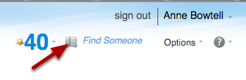

Finding an Oxford Username
How to find an Oxford Username. Oxford usernames are published in the University’s address book.
Use the Global Address List in your Nexus account

In the web interface, click the address book icon.
Search for the person

The Oxford username is listed next to ‘alias’ in the address book entry.